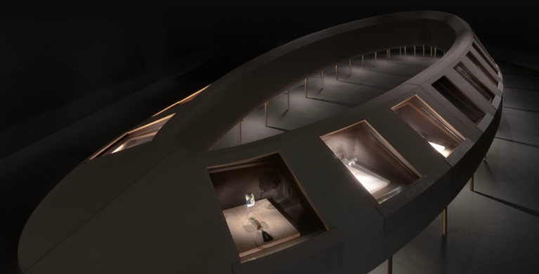
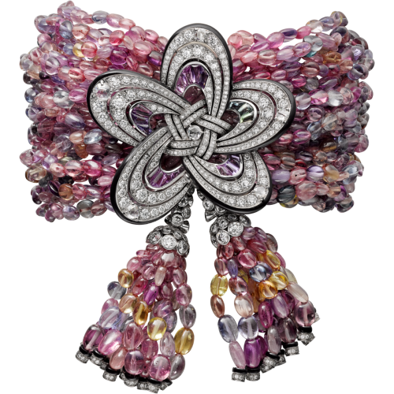
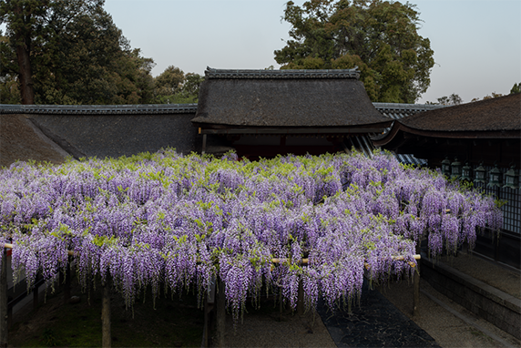
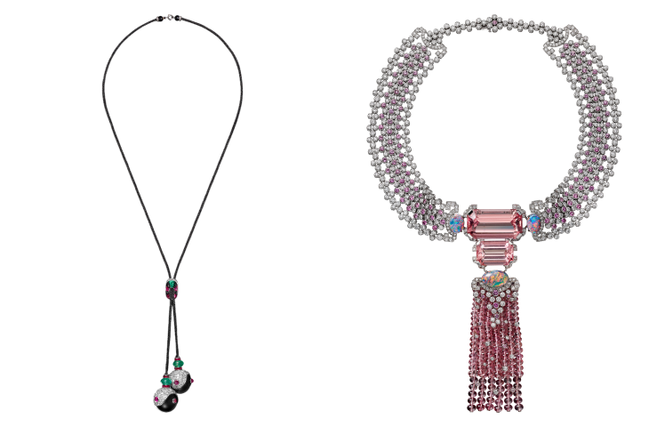
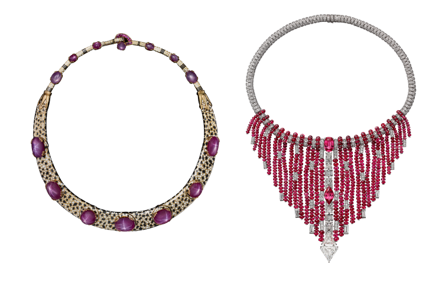
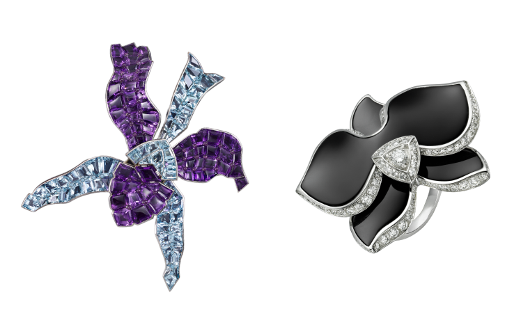
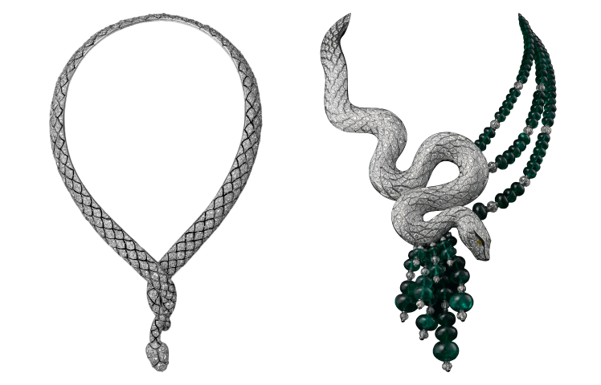

호기심은 인간을 이끄는 동력입니다.
풍부한 영감을 얻으려면
세상으로 여행을 떠나야 합니다.
마지막 챕터에서는 까르띠에 디자인의 원동력인 '범세계
적인 호기심’을 주제로 세계의 문화, 동식물에서 영감을
얻은 독보적인 작품들을 선보입니다. 루이 까르띠에의
세상을 향한 끝없는 관심을 바탕으로 그의 아트 컬렉션
과 라이브러리에서 탄생한 호기심은 까르띠에를 대표하
는 특징이 되었습니다. 까르띠에는 이러한 호기심을 발
판으로 과거와 현재, 동양과 서양을 넘나들며 독특하고
혁신적인 작품들을 탄생시켰습니다.
마지막 챕터에서는 까르띠에 디자인의 원동력인 '범세계
적인 호기심’을 주제로 세계의 문화, 동식물에서 영감을
얻은 독보적인 작품들을 선보입니다. 루이 까르띠에의
세상을 향한 끝없는 관심을 바탕으로 그의 아트 컬렉션
과 라이브러리에서 탄생한 호기심은 까르띠에를 대표하
는 특징이 되었습니다. 까르띠에는 이러한 호기심을 발
판으로 과거와 현재, 동양과 서양을 넘나들며 독특하고
혁신적인 작품들을 탄생시켰습니다.
마지막 챕터에서는 까르띠에 디자
인의 원동력인 '범세계적인 호기
심’을 주제로 세계의 문화, 동식물
에서 영감을 얻은 독보적인 작품들
을 선보입니다. 루이 까르띠에의
세상을 향한 끝없는 관심을 바탕으
로 그의 아트 컬렉션과 라이브러리
에서 탄생한 호기심은 까르띠에를
대표하는 특징이 되었습니다. 까르
띠에는 이러한 호기심을 발판으로
과거와 현재, 동양과 서양을 넘나
들며 독특하고 혁신적인 작품들을
탄생시켰습니다.

이 챕터에서는 전 세계 문화에서 영감을 얻은 까르띠에 주얼리들이 지구를 상
징하는 16미터 길이의 타원형 전시대에 놓여있습니다. 전시대는 회반죽으로
마감했습니다. 예부터 일본에서는 벽을 마감할 때 회반죽을 자주 사용했습니
다. 배합하는 재료에 따라 다양한 질감을 연출할 수 있기 때문입니다. 전시대의
곡선은 규조토와 석회를 섞고 능숙하게 도포한 장인의 솜씨로 아름답게 완성되
었습니다. 어둠 속에서 부유하는 듯한 타원형의 전시대는 우주를 가로지르는
혜성을 연상시킵니다. 관람객은 여기에 놓인 아주 작은 주얼리를 감상하면서
마치 광활한 우주공간에 서 있는 듯한 느낌을 받을 수 있을 것입니다.
이 챕터에서는 전 세계 문화에서 영감을 얻은 까르띠에 주얼리들이 지구를 상
징하는 16미터 길이의 타원형 전시대에 놓여있습니다. 전시대는 회반죽으로
마감했습니다. 예부터 일본에서는 벽을 마감할 때 회반죽을 자주 사용했습니
다. 배합하는 재료에 따라 다양한 질감을 연출할 수 있기 때문입니다. 전시대의
곡선은 규조토와 석회를 섞고 능숙하게 도포한 장인의 솜씨로 아름답게 완성되
었습니다. 어둠 속에서 부유하는 듯한 타원형의 전시대는 우주를 가로지르는
혜성을 연상시킵니다. 관람객은 여기에 놓인 아주 작은 주얼리를 감상하면서
마치 광활한 우주공간에 서 있는 듯한 느낌을 받을 수 있을 것입니다.
이 챕터에서는 전 세계 문화에서 영감을
얻은 까르띠에 주얼리들이 지구를
상징하는 16미터 길이의 타원형
전시대에 놓여있습니다. 전시대는
회반죽으로 마감했습니다. 예부터
일본에서는 벽을 마감할 때 회반죽을
자주 사용했습니다. 배합하는 재료에
따라 다양한 질감을 연출할 수 있기
때문입니다. 전시대의 곡선은 규조토와
석회를 섞고 능숙하게 도포한 장인의
솜씨로 아름답게 완성되었습니다. 어둠
속에서 부유하는 듯한 타원형의
전시대는 우주를 가로지르는 혜성을
연상시킵니다. 관람객은 여기에 놓인
아주 작은 주얼리를 감상하면서 마치
광활한 우주공간에 서 있는 듯한 느낌을
받을 수 있을 것입니다.

각 챕터의 마지막에는 까르띠에 주얼리와 한국과 일본의
앤티크 피스가 함께 전시되어 있으며 이는 이번 전시의
하이라이트라고 할 수 있습니다. 앤티크 피스는 스기모
토 히로시가 엄선한 개인 소장품, 그리고 이번 전시회를
통해 독점적으로 공개되는 한국의 개인 소장품 컬렉션입
니다. 한국과 일본의 앤티크 피스가 지닌 독창적 미학과
역사적 가치는 흥미롭게도 유럽 문화에 뿌리를 둔 까르
띠에 주얼리의 고도의 예술성과 조화롭게 공명합니다.
각 챕터의 마지막에는 까르띠에 주얼리와 한국과 일본의
앤티크 피스가 함께 전시되어 있으며 이는 이번 전시의
하이라이트라고 할 수 있습니다. 앤티크 피스는 스기모
토 히로시가 엄선한 개인 소장품, 그리고 이번 전시회를
통해 독점적으로 공개되는 한국의 개인 소장품 컬렉션입
니다. 한국과 일본의 앤티크 피스가 지닌 독창적 미학과
역사적 가치는 흥미롭게도 유럽 문화에 뿌리를 둔 까르
띠에 주얼리의 고도의 예술성과 조화롭게 공명합니다.
각 챕터의 마지막에는 까르띠에 주
얼리와 한국과 일본의 앤티크 피스
가 함께 전시되어 있으며 이는 이
번 전시의 하이라이트라고 할 수
있습니다. 앤티크 피스는 스기모토
히로시가 엄선한 개인 소장품, 그
리고 이번 전시회를 통해 독점적으
로 공개되는 한국의 개인 소장품
컬렉션입니다. 한국과 일본의 앤티
크 피스가 지닌 독창적 미학과 역
사적 가치는 흥미롭게도 유럽 문화
에 뿌리를 둔 까르띠에 주얼리의
고도의 예술성과 조화롭게 공명합
니다.
브레이슬릿
까르띠에, 2016
화이트 골드, 컬러 사파이어, 오닉스, 블랙 래커, 다이아몬드
까르띠에 소장품

<등나무, 가스가타이샤(春日大社)>, 스기모토 히로시, 2022, 개인 소장품
꽃망울이 펼쳐진 등나무 아래에 놓인 매듭 모양의 작은
브레이슬릿과 이어링은 그 자체로 활짝 핀 꽃입니다. 이
챕터에서 스기모토가 선택한 것은 스다 요시히로의 나무
덩굴 조각품입니다. 이 조각품은 한 한국 컬렉터의 고풍
스러운 조선시대 ‘백자 다각병’과 아름다운 조화를 이룹
니다. 이번 챕터에 설치된 작품은 봄 기운에 깨어나 꽃
피우는 자연을 상징합니다.
꽃망울이 펼쳐진 등나무 아래에 놓인 매듭 모양의 작은
브레이슬릿과 이어링은 그 자체로 활짝 핀 꽃입니다. 이
챕터에서 스기모토가 선택한 것은 스다 요시히로의 나무
덩굴 조각품입니다. 이 조각품은 한 한국 컬렉터의
고풍스러운 조선시대 ‘백자 다각병’과 아름다운 조화를
이룹니다. 이번 챕터에 설치된 작품은 봄 기운에 깨어나
꽃 피우는 자연을 상징합니다.
꽃망울이 펼쳐진 등나무 아래에
놓인 매듭 모양의 작은
브레이슬릿과 이어링은 그 자체로
활짝 핀 꽃입니다. 이 챕터에서
스기모토가 선택한 것은 스다
요시히로의 나무 덩굴
조각품입니다. 이 조각품은 한
한국 컬렉터의 고풍스러운
조선시대 ‘백자 다각병’과
아름다운 조화를 이룹니다. 이번
챕터에 설치된 작품은 봄 기운에
깨어나 꽃 피우는 자연을
상징합니다.
-
디자인의 흔적 No15

먼 곳에서 얻은 영감: 동아시아2018 1919까르띠에의 영감의 원천을 따라가다 보면 지구 한 바퀴는 거뜬히 돌 수 있습니다. 동아시아, 인도, 중동아시아, 아프리카, 중앙아메리카 등 메종의 초창기부터 쌓인 까르띠에의 기록을 살펴보면 셀 수 없이 다양한 지명이 등장합니다. 까르띠에의 디자이너들은 그 다양한 문화 속 건축과 장식 미술, 신화 등에서 주얼리 디자인에 적용할 수 있는 패턴과 색감을 찾아내기 위해 연구를 거듭했습니다. 동아시아는 특히 메종의 크리에이션에 지속적인 영감을 주었습니다. 최근엔 까르띠에 주얼리 디자인에서 고대 중앙아메리카 문화권의 요소를 심심치 않게 발견할 수 있습니다. 이는 세상을 향 한 까르띠에의 호기심이 여전히 사그라들지 않고 왕성하게 지속되고 있음을 보여줍니다. -
디자인의 흔적 No16

먼 곳에서 얻은 영감: 아프리카2018 1935고대 이집트의 신화와 대표적인 조각상들, 말리 도곤족의 마스크, 야생 동물들의 아름다운 털 무늬... 아프리카는 디자인 영감의 요소로 가득한 곳입니다. 광활한 아프리카 대륙과 그 자연 경관의 힘은 오늘날 까르띠에 주얼리에 그대로 반영되어 있습니다. -
디자인의 흔적 No17

자연에서 얻은 영감 — 사실에서 추상으로 : 플로라2009 1937자연의 동식물보다 신비로운 것은 없습니다. 까르띠에는 이러한 자연의 모습을 사실적으로 혹은 추상적으로 해석해 왔습니다. 많은 주얼러가 꽃을 사랑하지만, 끼르띠에는 특히 난초를 모티프로 한 작품들을 통해 식물에 대한 주얼러의 접근법을 재정의했습니다. 까르띠에의 주얼리로 표현된 포식성의 팬더, 목을 휘감는 뱀, 야생의 호랑이 등 형형색색의 동물들은 그야말로 상상력의 보고입니다. 까르띠에는 어떤 방식이든 표현하고자 하는 동물의 핵심적인 특징을 잘 잡아내는데, 이는 파충류나 대형 고양잇과의 동물을 모티프로 한 메종의 다양한 작품을 통해 확인할 수 있습니다. -
디자인의 흔적 No18

자연에서 얻은 영감 — 사실에서 추상으로: 동물2009 1937까르띠에의 주얼리로 표현된 포식성의 팬더, 목을 휘감는 뱀, 야생의 호랑이 등 형형색색의 동물들은 그야말로 상상력의 보고입니다. 까르띠에는 이러한 자연의 모습을 사실적으로 혹은 추상적으로 해석해 왔습니다. 어떤 방식이든 표현하고자 하는 동물의 핵심적인 특징을 잘 잡아내는데, 이는 파충류나 대형 고양잇과의 동물을 모티프로 한 메종의 다양한 작품을 통해 확인할 수 있습니다.